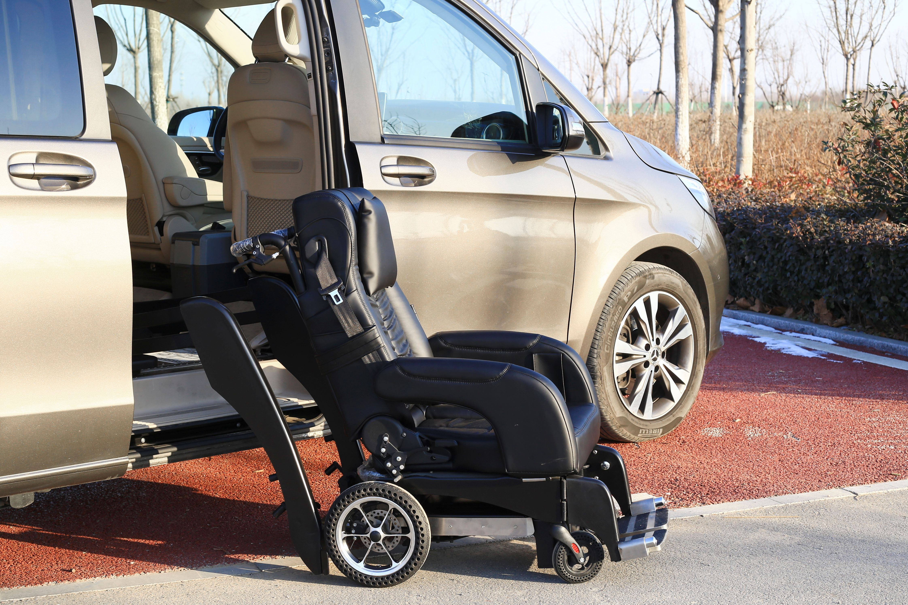
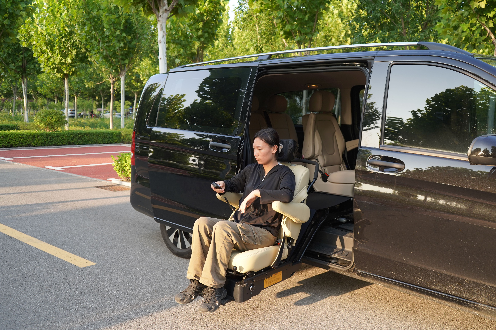
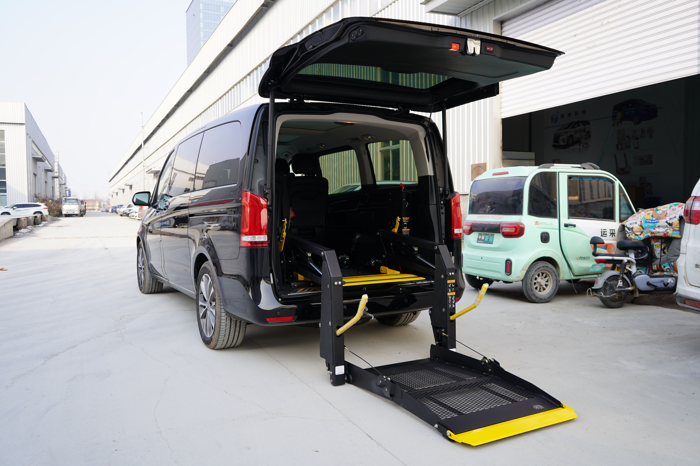

Before you leave
Allow for boarding, travel, and finding the right entrance. Bring your appointment details and a contact number.
A BETTER PLAN FOR APPOINTMENT DAYS
The journey is part of your day, too. Work through the travel details before your visit, so you can focus on what you’re going there for.
THINK BEYOND THE PICKUP
Allow for boarding, travel, and finding the right entrance. Bring your appointment details and a contact number.
Keep your transport provider’s contact number handy during the visit. Let them know promptly appointment.
Agree the return pickup location and timing before setting off. Check the best entrance to use, and confirm.
DIFFERENT VISITS. DIFFERENT ARRANGEMENTS.
Choose the journey you need to discuss. Each plan starts with your own schedule and mobility needs.
Bring the hospital or clinic name, appointment time, and entrance information. Discuss how early to arrive and how your return journey will be arranged.
Plan an outpatient visitShare the session location and expected finish time. If you attend regularly, discuss consistent pickup arrangements and any changes in boarding assistance.
Plan therapy transportKeep a list of dates, times, destinations, and return requirements. Confirm each arrangement directly; a repeating schedule does not guarantee availability.
Discuss recurring journeysSENIOR PASSENGERS & REGULAR ROUTINES
For a regular visit or a day with family, discuss boarding time, the assistance you prefer, and whether a companion will travel with you.
Share repeated dates together, confirm each arrangement, and agree who receives updates. Ask about device compatibility, driver training, and the available support before booking.
Discuss a regular journey
THE PASSENGER HAS A SAY
A caregiver may help with arrangements. The passenger’s preferences should guide the conversation.
Explain what works for you before the journey, rather than leaving it to the pickup.
CHECK THE FIT, NOT JUST THE VEHICLE
Ask the provider to confirm suitability before agreeing your ride. Photographs show examples of accessible equipment, not an assigned vehicle.

Discuss ramp or lift requirements and the assistance you prefer.

Confirm device dimensions, securement, companion seating.
PUT THE DETAILS IN ONE PLACE
Start with the outbound journey. Discuss your appointment, return pickup, and any recurring dates directly with the provider.
The form creates a summary on this page. It does not send a request or confirm a booking.
WHEN PLANS NEED A LITTLE FLEXIBILITY
Contact the provider as soon as you know. Ask whether a revised pickup is possible and whether change or cancellation terms apply.
Choose “Not sure” in the planner. Share the type and dimensions of your mobility device so the provider can discuss a suitable option.
Agree who will receive pickup information and who can be contacted on the day. Keep the passenger involved in decisions.
Discuss that separately with the appropriate care provider. This website does not arrange emergency response or medical treatment.
READY FOR YOUR NEXT VISIT?
Start with one journey. Talk through the rest.